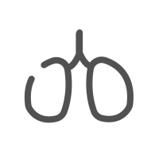
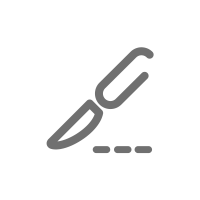
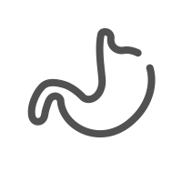
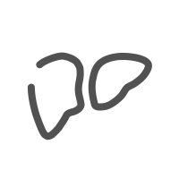
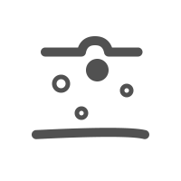

选择科目
已为您选择：{{keshi}}
请选择题量
5题
10题
20题
50题
题量
已选择：{{num}}题
开始考试

临床内科学
心血管病学
呼吸病学
血液病学
肾脏病学
内分泌学
感染病学（传染病学）

临床外科学
烧伤外科学
烧伤外科学
烧伤外科学
神经外科学
泌尿外科学
肿瘤外科学
耳鼻喉科学

胃肠科学
眼科学

肝科学
骨科学
急诊学
康复学
口腔学
神经学

皮肤科学